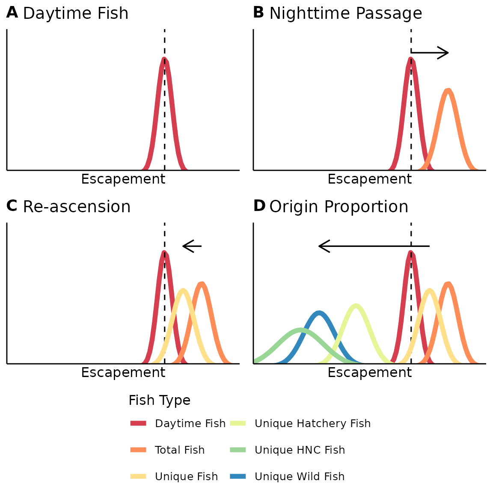
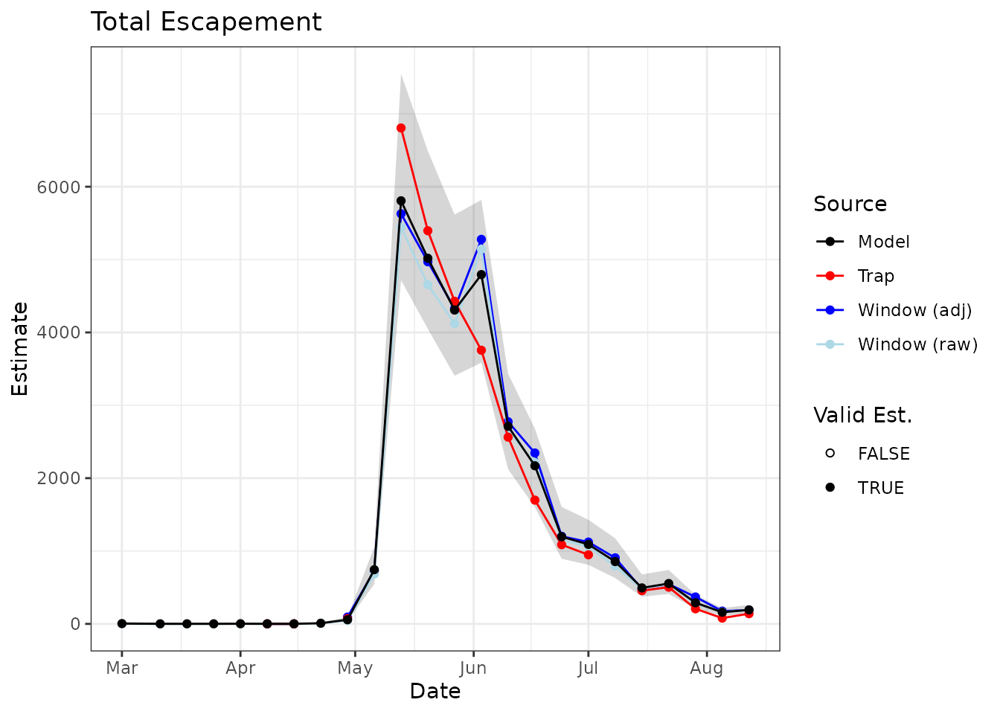
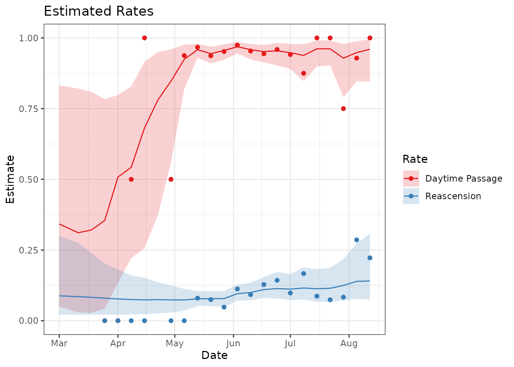

The STADEM package was developed with the goal of estimating total adult escapement of spring/summer Chinook salmon and steelhead that cross Lower Granite dam (LGD). In addition, to meet desired management and research objectives, total escapement has to include estimates of uncertainty and be parsed into weekly strata by three origin groups; wild, hatchery and hatchery no-clip. To reach this goal, we have developed the STate space Adult Dam Escapement Model (STADEM) model that incorporates fish ladder window counts, data from sampled fish at the LGD adult trap, and observations of previously PIT tagged fish at LGD adult detection sites.
Some of the data needed for STADEM is available at other dams, and the package developers are currently working to develop the ability to query all of the necessary data at other locations. Currently however, the focus remains on Lower Granite dam, the furthest upstream dam returning salmonids encounter on the journey up the Snake River. The following example will show how to run STADEM at Lower Granite for one species and one year, and what some of the output looks like.
STADEM relies on the following R packages which can be downloaded via
CRAN
or by using the function install.packages():
dplyr and lubridate can both be installed
by installing the tidyverse packagehttr2rjagsbootIn addition, STADEM requires the JAGS software (Just Another Gibbs Sampler). Please download version >= 4.0.0 via the former link.
STADEM relies on several pieces of data, which must be compiled from multiple sources. Many of them are accessed through the Columbia Basin Research Data Access in Real Time (DART) website.
STADEM estimates the total number of fish crossing the dam each week, based on two major data sources: the window counts and the total fish in the trap, while also accounting for two known biological processes: night-time passage and fallback-and-reascension. Using a state-space approach, STADEM assumes that the window counts and the estimates from the trap (fish in the trap divided by trap rate that week) are generated by processes with observation error. In the case of the window counts, there is some inherent error in the counting process, and it fails to account for fish that cross the dam while the window is closed. In the case of the trap, there is sampling variation and uncertainty in what the realized trap rate is. In addition, STADEM accounts for potential double-counting of fish that have fallen back and re-ascended the dam. It then partitions the estimate of total fish over the dam by origin, to provide the needed data for management goals (Figure @ref(fig:stadem-model-figure)).

Schematic of how the STADEM model works. Panel A shows the posterior of the estimate of fish crossing while the window is open (dashed line shows observed window counts). That estimate is divided by the nighttime passage rate (B). The total fish is then discounted by the reascension rate to estimate unique fish (C). Those unique fish are then multiplied by the proportion of wild fish (D), to estimate unique wild fish.
The STADEM package relies on many functions from two other packages,
dplyr for many data manipulation functions and
lubridate for dates and intervals. It uses the
httr2 package for many queries of data. It also depends
upon the rjags package to run the JAGS program from within
R.
The STADEM package makes it easy to compile all the necessary data in
one convenient function, compileGRAdata. The user provides
the spawn year and species (either “Chinook” or “Steelhead”) they are
interested in. STADEM operates on a weekly time-step, and the user has
the option to determine the day of the week that most strata will begin
on, using the strata_beg argument. There are periodic
messages describing what is being done within
compileGRAdata. Within compileGRAdata, several
internal functions are being called, which may be utilized with the
STADEM package for other purposes. They include:
getWindowCounts: query DART for window counts at
various damsqueryPITtagData: query DART for data about PIT tags
exhibiting night-time passage and fallback/reascension behaviorweeklyStrata: divide season into weekly strata, with
the user defining the day of the week each strata should begin withsummariseLGRtrapDaily: summarize on a daily time-step
the .csv file contained within the Lower Granite Dam trap databasetagTrapRate: estimate the fish trap rate based on
proportion of PIT tags known to have crossed the dam were caught in the
adult trapqueryTrapRate: query DART for intended and realized
trap rates, based on time the trap is open
# what spawning year?
yr = 2019
# what species?
spp = 'Chinook'
# pull together all data
stadem_list = compileData(spp = spp,
dam = "LWG",
start_date = paste0(yr, '0301'),
end_date = paste0(yr, '0817'),
strata_beg = 'Mon',
trap_dbase = readLGRtrapDB(system.file("extdata",
"Chnk2019_TrapDatabase.csv",
package = "STADEM",
mustWork = TRUE)))The compileGRAdata() function returns several pieces of
information, consolidated into a named list we have called
stadem_list:
weekStrata: weekly strata for STADEM, which are
interval objects from the lubridate
package.trapData: data from adult fish trap.dailyData: data.frame of data, summarized by day.weeklyData: data.frame of data, summarized by weekly
strata.To run STADEM, only weeklyData is needed. STADEM also
includes a function to transform all relevant data from the weekly
summary to a list ready to be passed to JAGS.
# compile everything into a list to pass to JAGS
jags_data_list = prepJAGS(stadem_list[['weeklyData']])## Prepping JAGS dataPart of the function runJAGSmodel writes the JAGS model
as a text file. This requires a filename, and the type of statistical
distribution the user would like to use to model the window counts. The
options are Poisson (pois), negative binomial
(neg_bin), a more flexible type of negative binomial,
described in Lindén and Mäntyniemi (2011)
(neg_bin2), quasi-Poisson (quasi_pois), or as
a normal distribution in log-space (log_space). Once those
have been set, use the runSTADEMmodel function to run the
model in JAGS. Some of the inputs to this function are:
file_name name of text file to write the JAGS model to
(should end in .txt)mcmc_chainlength total length of MCMC chainmcmc_burn length of burn-in period for MCMC chainmcmc_thin thinning rate for with samples of MCMC chain
to keepmcmc_chains how many independent chains to runjags_data list of data compiled for JAGS, returned by
prepJAGS functionseed input to set.seed function to make
the results exactly reproducibleweekly_params Should weekly estimates of escapement be
saved, or only season-wide totals?win_model statistical distribution used to model the
window countstrap_est if set to FALSE, the estimate of
escapement from the trap and trap rate is not used, and
win_model is automatically set to Poisson.Recommended MCMC parameters are:
mcmc_chains: 4mcmc_chainLength: 40,000mcmc_burn: 10,000mcmc_thin: 30This provides a sample of 4,000 draws from the posterior distribution. Through trial and error, we have also determined the appropriate burn-in length and thinning interval to meet MCMC posterior checks.
We also recommend using the negative binomial distribution
(win_model = neg_bin) to model the window counts. In our
experience, all options other than the Poisson distribution provide
similar estimates, with similar estimates of uncertainty. The Poisson
distribution does not allow for the possibility of overdispersion in the
window count data, leading to smaller uncertainty estimates which may
not be appropriate. However, we encourage investigation of how different
distribution choices may affect estimates for particular datasets, and
for users to critically consider the appropriate modeling choice.
# name of JAGS model to write
model_file_nm = tempfile('STADEM_JAGS_model', fileext = ".txt")
# what distribution to use for window counts?
win_model = c('pois', 'neg_bin', 'neg_bin2', 'quasi_pois', 'log_space')[2]
#-----------------------------------------------------------------
# run STADEM model
#-----------------------------------------------------------------
stadem_mod = runSTADEMmodel(file_name = model_file_nm,
mcmc_chainLength = 40000,
mcmc_burn = 10000,
mcmc_thin = 30,
mcmc_chains = 4,
jags_data = jags_data_list,
seed = 5,
weekly_params = T,
win_model = win_model,
trap_est = T)The JAGS object returned by runSTADEMmodel contains many
parameter estimates. Some of the most important are the total escapement
of various fish (Table @ref(tab:summary-total-escapement)).
summ <- summary(stadem_mod)
summ$statistics |>
as_tibble(rownames = "Parameter") |>
filter(grepl('X.tot', Parameter)) |>
select(1:3) |>
kbl(booktabs = T,
linesep = "",
digits = c(0, 0, 1, 1),
caption = "Estimates of escapement.",
format.args = list(big.mark = ",")) %>%
kable_styling()| Parameter | Mean | SD |
|---|---|---|
| X.tot.all | 30,702 | 1,323.0 |
| X.tot.day | 29,215 | 1,254.7 |
| X.tot.new.all | 27,885 | 1,231.3 |
| X.tot.new.hatch | 21,143 | 986.3 |
| X.tot.new.hnc | 1,955 | 123.3 |
| X.tot.new.wild | 4,787 | 231.6 |
| X.tot.night | 1,487 | 211.9 |
| X.tot.night.wild | 236 | 36.1 |
| X.tot.reasc | 2,817 | 281.3 |
| X.tot.reasc.wild | 529 | 56.2 |
Another table that summarizes some of the output by week can be found by using the code below (Table @ref(tab:week-est-tab)).
week_df <- summ$statistics |>
as_tibble(rownames = "var") |>
filter(grepl("^X.all\\[", var) |
grepl("^X.day\\[", var) |
grepl("^X.night\\[", var) |
grepl("^X.reasc\\[", var) |
grepl("^X.new.tot\\[", var)) |>
mutate(week = as.integer(str_extract(var, "[0-9]+")),
param = str_extract_all(var, "[:alpha:]+", simplify = T)[,2]) %>%
mutate(param = recode(param,
'all' = 'Total',
'day' = 'Day',
'night' = 'Night',
'reasc' = 'Reascension',
'new' = 'Unique')) %>%
select(param, week,
mean = Mean, sd = SD)
# table with point estimates only
pt_est_tab = week_df %>%
select(-sd) %>%
mutate(mean = round(mean)) %>%
pivot_wider(names_from = param,
values_from = mean) %>%
left_join(stadem_list[['weeklyData']] %>%
mutate(week = 1:n())) %>%
select(Week = week,
Win.Cnt = win_cnt,
Total,
Day,
Night,
Reascension,
Unique)
# table with point estimates and standard errors
est_tab = week_df %>%
mutate(prnt_val = paste0(prettyNum(round(mean), big.mark = ","), ' (', prettyNum(round(sd, 1), big.mark = ","), ')')) %>%
select(-sd, -mean) %>%
spread(param, prnt_val) %>%
left_join(stadem_list[['weeklyData']] %>%
mutate(week = 1:n())) %>%
select(Week = week,
Win.Cnt = win_cnt,
Total,
Day,
Night,
Reascension,
Unique)
est_tab %>%
kbl(booktabs = T,
linesep = "",
caption = "Estimates by week.",
format.args = list(big.mark = ',')) %>%
kable_styling()| Week | Win.Cnt | Total | Day | Night | Reascension | Unique |
|---|---|---|---|---|---|---|
| 1 | 1 | 6 (7.7) | 2 (0.9) | 5 (7.4) | 1 (1.1) | 6 (6.9) |
| 2 | -1 | 2 (4.2) | 0 (0.6) | 2 (4) | 0 (0.5) | 2 (3.8) |
| 3 | 0 | 2 (3.5) | 0 (0.4) | 1 (3.4) | 0 (0.4) | 1 (3.2) |
| 4 | 0 | 1 (2.5) | 0 (0.5) | 1 (2.4) | 0 (0.3) | 1 (2.3) |
| 5 | 1 | 2 (2.5) | 1 (0.4) | 1 (2.4) | 0 (0.3) | 2 (2.3) |
| 6 | 0 | 1 (1) | 0 (0.6) | 1 (0.7) | 0 (0.1) | 1 (1) |
| 7 | 0 | 1 (1.1) | 1 (0.7) | 0 (0.8) | 0 (0.1) | 1 (1.1) |
| 8 | 7 | 10 (5.1) | 7 (2.7) | 3 (3.7) | 1 (0.6) | 9 (4.7) |
| 9 | 47 | 59 (14.9) | 48 (9.4) | 11 (10.1) | 4 (1.9) | 55 (13.9) |
| 10 | 683 | 759 (130.3) | 695 (115.2) | 64 (37.5) | 56 (18.2) | 703 (121.7) |
| 11 | 5,444 | 5,895 (688.9) | 5,643 (658.2) | 252 (83) | 458 (97.2) | 5,437 (643.2) |
| 12 | 4,656 | 5,085 (613.5) | 4,794 (577.1) | 291 (89.3) | 397 (83.3) | 4,687 (572.5) |
| 13 | 4,120 | 4,358 (545.9) | 4,156 (519) | 202 (68.4) | 339 (77.1) | 4,018 (508.5) |
| 14 | 5,143 | 4,758 (578.2) | 4,605 (558.8) | 153 (53.9) | 459 (89.2) | 4,299 (525.4) |
| 15 | 2,646 | 2,726 (318.1) | 2,608 (303.1) | 118 (42.5) | 274 (52.9) | 2,452 (289.1) |
| 16 | 2,214 | 2,158 (276.1) | 2,049 (260.9) | 109 (38.9) | 242 (50.6) | 1,916 (249.5) |
| 17 | 1,153 | 1,207 (173.5) | 1,148 (162.6) | 59 (28.5) | 141 (35) | 1,066 (156.2) |
| 18 | 1,057 | 1,096 (153.8) | 1,034 (143) | 62 (29) | 125 (31.2) | 971 (138.7) |
| 19 | 793 | 866 (136.7) | 805 (123.8) | 61 (35.6) | 104 (30.7) | 763 (122) |
| 20 | 477 | 501 (75.6) | 479 (71.5) | 22 (13.3) | 58 (17.1) | 443 (68.4) |
| 21 | 546 | 559 (81.6) | 535 (77) | 24 (14.5) | 66 (19.5) | 493 (74.3) |
| 22 | 277 | 293 (47.1) | 268 (40.8) | 25 (17.5) | 38 (12.5) | 255 (42.7) |
| 23 | 163 | 161 (26.6) | 151 (24.3) | 10 (7) | 24 (9) | 137 (24.1) |
| 24 | 190 | 194 (31.2) | 184 (28.6) | 10 (9) | 30 (13) | 164 (29) |
A user might also like to make time-series plots of estimates, to
compare with window counts and/or trap estimates (Figure
@ref(fig:time-series-plot)). STADEM contains a function to
do that, plotTimeSeries().
# plot time-series of model estimates, window counts and trap estimates
plotTimeSeries(stadem_mod,
stadem_list$weeklyData) +
theme_bw()
Time-series plot showing estimates of total escapement for Chinook in 2019, including raw window counts, window counts adjusted for nighttime passage, trap estimates and STADEM estimates.
It’s also possible to examine estimates of night-time passage or re-ascension rates. Figure @ref(fig:rate-figure) shows the observed values as points, the estimated rates as lines, with 95% credible intervals around them.
rate_est = summ$quantiles |>
as_tibble(rownames = "var") |>
filter(grepl('^day.true', var) |
grepl('^reasc.true', var)) %>%
mutate(week = as.integer(str_extract(var, "[0-9]+")),
param = str_extract_all(var, "[:alpha:]+", simplify = T)[,1]) %>%
select(var, param, week, everything()) %>%
left_join(stadem_list[['weeklyData']],
by = c('week' = 'week_num'))
rate_est %>%
ggplot(aes(x = start_date,
y = `50%`)) +
geom_ribbon(aes(ymin = `2.5%`,
ymax = `97.5%`,
fill = param),
alpha = 0.2) +
geom_line(aes(color = param)) +
geom_point(aes(y = day_tags / tot_tags,
color = 'day')) +
geom_point(aes(y = reascent_tags / tot_tags,
color = 'reasc')) +
theme_bw() +
scale_color_brewer(palette = 'Set1',
name = 'Rate',
labels = c('day' = 'Daytime Passage',
'reasc' = 'Reascension')) +
scale_fill_brewer(palette = 'Set1',
name = 'Rate',
labels = c('day' = 'Daytime Passage',
'reasc' = 'Reascension')) +
labs(y = 'Estimate',
x = 'Date',
title = 'Estimated Rates')
Time-series of estimated day-time passage (red) and re-ascension (blue) rates, with points representing the observed data and shaded polygons represeneting the 95% credible intervals.
The user does have the option to not use fish caught in the trap as a
secondary estimate of escapement. To turn this feature off, set the
argument trap_est equal to FALSE in the
runSTADEMmodel function. This will constrain the
statistical distribution used to model the window counts as Poisson,
because there is no other way to estimate the variance in those
counts.
If the user would like to summarize STADEM estimates of total unique
escapement, by week, (e.g. as an input to the SCOBI
package), there is a function to do that,
STADEMtoSCOBI.
scobi_input = STADEMtoSCBOI(stadem_mod = stadem_mod,
lgr_weekly = stadem_list[['weeklyData']])
head(scobi_input)## # A tibble: 6 × 6
## model_week StartDate Strata Estimate SE Collapse
## <dbl> <dttm> <dbl> <dbl> <dbl> <lgl>
## 1 1 2019-03-01 00:00:00 9 6 7.68 NA
## 2 2 2019-03-11 00:00:00 10 2 4.17 NA
## 3 3 2019-03-18 00:00:00 11 2 3.51 NA
## 4 4 2019-03-25 00:00:00 12 1 2.52 NA
## 5 5 2019-04-01 00:00:00 13 2 2.54 NA
## 6 6 2019-04-08 00:00:00 14 1 0.998 NA